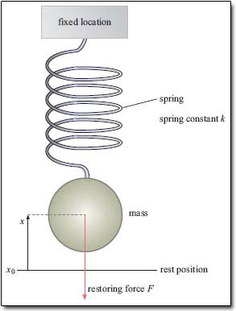
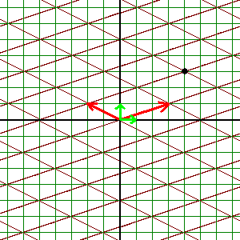
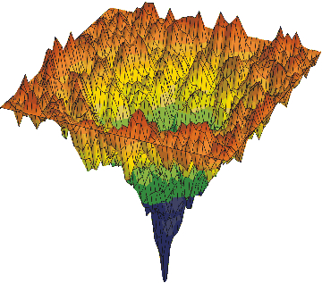
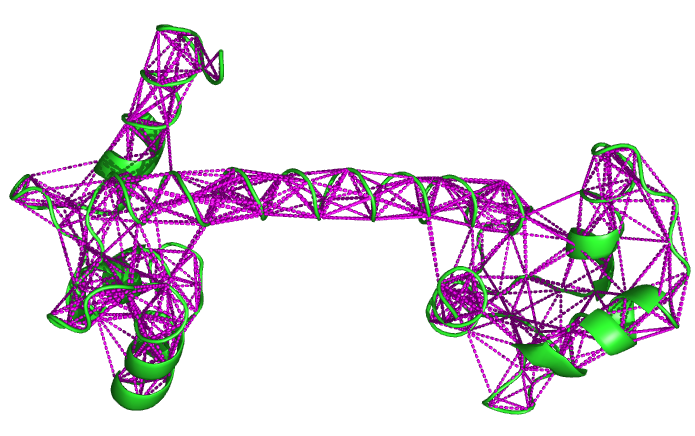
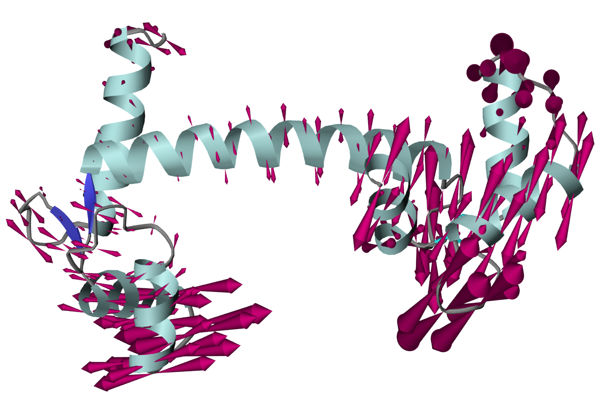

11 Forces and potentials in biological modeling
In the last chapter we learned to analyze the dynamics of linear dynamical systems by finding the eigenvalues of corresponding matrices. In this chapter, we will study a class of mathematical models with a classical physics pedigree. These models are based on a physical potential, which is usually given by a physical law, e.g. gravity. These systems are special, because they have a conserved quantity that is known as energy. We will learn about the consequences of such conserved quantities, and what happens when the conservation is broken and energy dissipates.
The main type of models that we will address are oscillators, with the simplest being simple springs. These models are in fact relevant for biological modeling in a variety of fields. We will apply the analysis to the study of biomolecular flexibility, to predict the preferred directions of internal motion of parts of protein molecules. The study of protein structural dynamics has important implication to understanding the mechanism of function of many biochemical systems. For example, many signaling molecules undergo conformational changes upon binding or phosphorylation, which generates changes in their biochemical actions.
The modeling section explains the basic physics of forces and potential functions. We will use examples of a single mass on a spring, and the scale up to two masses connected by a spring. In the analytic section, we will learn how to turn second order ODEs into first order dynamical systems, then find the explicit solutions for the oscillations of a simple spring. We will show how damping enters the solution, and what effect it has on conservation. We will also learn how to include external forcing in the model. In the computational section we will describe a general system of coupled linear oscillators using normal mode analysis. In the final section normal mode analysis is applied to studying the dynamics of protein structures.
11.1 Forces and simple springs
As we have learned in the last two chapters, linear dynamical systems have general solutions in the form of a weighted sum of exponentials:
\[ \vec x(t) = \sum_i c_i \vec v_i e^{\lambda_i t} \]
The type of dynamics possible in a system is determined by the eigenvalues \(\lambda_i\) of the corresponding matrix. If they are real, the system will grow or decay exponentially, while the presence of imaginary part produces oscillations, with growing, decaying, or constant amplitude, depending on the real part. Below we describe the modeling situations in which this limited menu of dynamics may be applied.
11.1.1 exponential growth and decay
No biological systems have purely exponential dynamics, as nothing in nature can realistically grow without bound, or decay inexorably to zero. Nevertheless, exponential behavior can be useful for modeling the dynamics in a limited regime, especially near an equilibrium. We have seen an illustration of this idea in the first part of the course, when we analyzed nonlinear one dimensional dynamical systems by approximating them with a linear system near an equilibrium. This linearization process is also applicable to multidimensional systems, where it involves the use of a first derivative matrix (called the Jacobian) as the local linear approximation. We will learn how to do this in detail in a future chapter, but the idea remains the same: by analyzing the eigenvalues of the matrix, one can predict whether the solution of the system grows or decays near the equilibrium. In the first case, the equilibrium is unstable, in the second, it is stable.
11.1.2 properties of linear oscillations
Another area of applicability of linear models is for describing oscillatory behavior. Many biological systems exhibit oscillatory dynamics, ranging from heartbeat and circadian rhythms in physiology, to cycles of biochemical reactions and firing of neurons. We know that linear systems with complex eigenvalues have oscillatory dynamics, so it is tempting to describe these phenomena with linear models. As we saw above, however, linear models cannot describe real biological systems over all possible values of its variable. Linear oscillations have specific properties which are generally not found in real systems: if the real part of the eigenvalue is nonzero, they either have exponentially growing or decaying amplitudes, which, as we argued above is not biologically feasible in the long run. This leaves the situation when the real part is zero, and the oscillations have a constant amplitude. This situation is not immediately unrealistic, but it has its own specific limitations: in it, oscillations of all amplitudes are possible, regardless of the frequency (think of the simple harmonic oscillator in the previous chapter.) This is also unrealistic, and nonlinear models are necessary to model the dynamics usually observed in reality, in which oscillations occurs with a preferred frequency and amplitude.
11.1.3 potentials and forces
The dynamics of systems in classical physical are defined by their potential functions. The potential energy describes the propensity of the system to do work, that is, to apply force to an object over some distance. By definition, work is the difference between the potentials at the two endpoints of the path, \(a\) and \(b\). This can be summarized in the following equation, relating work \(W\) done on an object by applying force \(f(x)\) over the distance from \(a\) to \(b\):
\[ W = V(b) - V(a) = \int_a^b f(x) dx \]
Intuitively, one can think of a potential function \(V(x)\) as a law handed from on high, which dictates what forces are going to act on the system. The forces then make the objects in the systems move, generating dynamics that we care about and will investigate in this chapter.
The above connection between potential and force has a familiar form. In fact, it is equivalent to the Fundamental Theorem of calculus, where we define the force \(f(x)\) to be the derivative of the potential \(V(x)\). This relationship is at the center of this chapter:
\[ f(x) = -V'(x) \]
Graphically speaking, the force is the negative slope of the potential function. This means that if the force is always pushing the object down the slope: if the potential is rising, it is pushing backward, and if the potential is falling, it is pushing forward. Essentially, this definition is consistent with the metaphor of potential as a terrain, with gravitational force bringing objects down to the lowest point of the landscape.
11.1.4 harmonic spring potential
We will define a specific potential for a mass on a spring and investigate the resulting dynamical system in the analytical section. The assumptions are: a) that there is a position \(x_0\) at which the spring is at rest, that is, no force is acting on the object, and b) that the force will push the object back toward the resting position, with strength proportional to the displacement \((x-x_0)\) of the mass from the resting position. Turns out that this model is defined by the following potential function:
\[ V(x) = \frac{1}{2}k(x-x_0)^2 \]
Here \(k\) is known as the spring constant, and this parameter describes the strength of the restoring force: for large \(k\), the mass will be pulled toward the resting state with greater force than with a smaller \(k\). Notice that the potential has a minimum at \(x_0\), since this is the position that is most favorable for the system. The variables and parameters of the model are illustrated in figure .

Using the relationship in equation [eq:force_pot] above, we conclude that the restoring force in the system obeys the following equation:
\[ f(x) = k (x_0-x) \]
This model of a simple spring with a quadratic potential and linear force is called a Hookean spring model, after the physicist Robert Hooke. The idealized linear spring model is also called a harmonic oscillator, because, as we will see in the analytical section, its solutions are perfect periodic oscillations.
The expression for force can be translated into the language of ODEs and dynamics using Newton’s second law, which states that \(f = ma\). Recall that the acceleration in physics is the second derivative of position, and we can write down the dynamical system of a harmonic oscillator as follows:
\[ m\ddot x = k (x_0-x) \]
We will learn to solve this equation in the next section.
In reality, there is usually another force that acts to slow down any moving object. This effect is called kinetic friction, or viscosity if the object is in a fluid, such as air or water. The typical model for kinetic friction assumes the friction force is proportional to the velocity of the object. The relationship has a negative sign, since the force acts in the opposite direction of the velocity, slowing down the motion. The friction force \(g(x)\) is defined as follows.
\[ g(x) = - \gamma v = - \gamma \dot x \]
Thus, a system incorporating a harmonic oscillator with friction has the following equation of motion:
\[ m\ddot x = k (x_0-x) - \gamma \dot x \]
11.1.5 two masses connected by a spring
We have only looked at a single oscillator, whose dynamics depend solely on its own position. Now, consider two separate objects connected by a linear Hookean spring. Let us define \(x\) and \(y\) to be the displacements of the two objects from the respective resting positions; this way we don’t have to keep around \(x_0\) and \(y_0\). The force depends on the distance between the two of them, and if we restrict the model to one dimension, it depends on the difference between the two displacements. The force on each particle is in the opposite direction of its own displacement and in the same direction as the other particle’s displacement, so the equations are:
\[ \begin{aligned} m \ddot x &=& -k(x-y) \\ m \ddot y &=& -k(y-x) \end{aligned} \]
The dynamical system can be expressed in matrix form, where the matrix \(A\) is:
\[ A = \frac{k}{m}\left(\begin{array}{cc}-1 & 1 \\1 & -1\end{array}\right) \]
Then the system of ODEs can be written down more concisely, with the vector \(\vec x\) contains the positions of both \(x\) and \(y\):
\[ \ddot {\vec x} = A \vec x \]
11.1.6 converting second order ODEs into first order
In the previous section we found the can transform it into a 2D system and use the geometric methods of phase plane analysis analysis. Let us introduce a second variable \(y = \dot x\). Then \(\dot y = \ddot x\), and we can write a system of equations in the standard first order form, which will enable us to use our analytical tools.
Example. Let us consider the harmonic oscillator with no damping, as defined in the modeling section. The second order equation can be written as two first order equations:
\[ \begin{aligned} \dot y &=& - \frac{k}{m}x \\ \dot x &=& y \end{aligned} \]
The eigenvalues of this system are \(\lambda = \pm \sqrt\frac{k}{m} i\), and \(\sqrt\frac{k}{m}\) is the frequency of oscillation of this model, which in physics is used to model a simple Hookean spring. The solutions are in the form of sines and cosines, and we can write it:
\[ x(t) = A \cos(\sqrt\frac{k}{m}t) + B \sin(\sqrt\frac{k}{m}t) \]
The constants \(A\) and \(B\) are determined by the initial conditions. Note that for second order equations, two initial conditions must be specified (e.g. one for \(x\) and one for \(\dot x\)) to determine the two integration constants.
Example. Let us now consider the harmonic oscillator with damping added. The second order equation can be written as two first order equations: \[ \begin{aligned} \dot y &=& - \frac{k}{m}x -\frac{\gamma}{m}y \\ \dot x &=& y \end{aligned} \]
The eigenvalues of this system are: \(\lambda = (-\gamma \pm \sqrt{\gamma^2-4km})/2m\). This means, depending on the sign of \(\gamma^2-4km\), the eigenvalues may be either real or complex. If they are complex, the solutions will be damped oscillations because the real part (\(-\gamma\)) is negative. The solution can be written with the following exponential and oscillation terms:
\[ x(t) = Ae^{-\frac{\gamma}{m} t}\cos[(\sqrt{k/m-\gamma^2/4m^2}) t ]+Be^{-\frac{\gamma}{m} t}\sin[(\sqrt{k/m-\gamma^2/4m^2}) t] \]
11.1.7 dynamic behaviors of the harmonic oscillator
We have seen that when there is a restoring force \(F = -kx\), were \(x\) is the displacement from a resting value, the differential equation from Newton’s second law is \(m \ddot x = - kx\), or \(\ddot x = -\omega^2 x\), with \(\omega = \sqrt{k/m}\). We can see immediately from this expression that sines and cosines are solutions, because by taking two derivatives one gets back the same function, multiplied by the negative square of the frequency (check this yourself). This is also what we get from eigenvalue analysis, by finding the eigenvalues of the system \(\pm \omega i\).
If there is a nonzero first derivative term in the force, \(F = -kx + \gamma \dot x\); if \(\gamma\) is negative it is called a damping term. Let us analyze this scenario by finding the eigenvalues of the corresponding second-order ODE \(\ddot x + \gamma/m \dot x + \omega^2 x = 0\):
\[ \lambda = (-\gamma/m \pm \sqrt{(\gamma/m)^2 - 4\omega^2})/2 \]
We see that the eigenvalues are real if \((\gamma/m)^2 > 4\omega^2\), and complex if \((\gamma/m)^2 < 4\omega^2\), and the solutions would be decaying exponentials. Physically speaking, if damping is too strong, the system’s propensity for oscillations is overpowered, and the displacement \(x\) never gets to the other side of 0 (think of a mass on a spring in molasses). This system is called overdamped. On the other hand, if \(\gamma\) is below the threshold value, oscillations persist, although they tend to zero with time, in the form of \(e^{-\gamma/m}(A\sin(\omega t) + B\cos(\omega t))\). This system is called underdamped. At \((\gamma/m)^2 = 4\omega^2\), the situation is called critical damping - the oscillator will return to its resting state and just miss overshooting it.
If \(\gamma\) were positive (I cannot think of a physical or biological example) the situation would be reversed, leading to exponentially growing oscillations or pure exponential growth.
11.1.8 forcing and inhomogeneous ODEs
We will now consider a system that consists of a harmonic oscillator to which which an external force is applied. Mathematically, the force is external if it does not depend on the variables of the system, although it may depend on time.
Now let us consider a harmonic oscillator that is driven by a periodic external force. This could represent a mass on a spring which is being “forced” by an external influence, or an oscillating neuron that receives a periodic signal from another neuron.
We will now consider an inhomogeneous ODE with the method of undetermined coefficients. The rule of thumb is: if the form of the inhomogeneity is unchanged by differentiation (e.g. exponentials, polynomials) then use this form multiplied by some constants as a guess for the particular solution. Then substitute it into the ODE, and find which values of the constants will satisfy the ODE.
\[ \ddot x + \omega_0^2x = C\cos(\omega t) \]
First, the solution of the homogeneous equation is a sum of sines and cosines with frequency \(\omega_0\): \(x_h =A \cos(\omega_0t) + B\sin(\omega_0t)\). To find the particular solution, let us assume that the solution has the same form as the forcing term, with some undetermined coefficients: \(x_h = C_1\cos(\omega t) + C_2 \sin(\omega t)\).
The second derivative is then: \(\ddot x_h = -C_1\omega^2\cos(\omega t) -C_2 \omega^2\sin(\omega t)\). Plugging this into the equation we have:
\[ -C_1\omega^2\cos(\omega t) -C_2 \omega^2\sin(\omega t) + \omega_0^2( C_1\cos(\omega t) + C_2 \sin(\omega t)) = C\cos(\omega t) \]
Since there is no sine term on the right hand side, we need to set \(C_2 = 0\). The cosine terms yield the following expression: \((-C_1\omega^2 + \omega_0^2 C_1)\cos(\omega t) = C\cos(\omega t) \Rightarrow C_1 = C/( \omega_0^2-\omega^2)\).
Adding the homogeneous and the particular solutions together, we find the general solution for a harmonic oscillator with a periodic driving force: \[ x(t) = x_h + x_p = A \cos(\omega_0t) + B\sin(\omega_0t) + \frac{C}{\omega_0^2-\omega^2}\cos(\omega t) \]
The solution is a superposition of oscillations at the inherent frequency of the oscillator (\(\omega_0\)) and the external driving frequency (\(\omega\)). What happens when the two frequencies match?
11.1.9 forced oscillations and resonance
When \(\omega = \omega_0\) he particular solution found above no longer exists because of division by zero. Thus, we need to seek another solution. Let us try the guess of \(x_h = C_1t\cos(\omega t) + C_2 t\sin(\omega t)\). Let us find its derivative, using the product rule: \(\dot x_h = C_1\cos(\omega t) - C_1\omega t\sin(\omega t) + C_2 \sin(\omega t) + C_2 \omega t\cos(\omega t)\). The second derivative then becomes: \(\ddot x_h = -C_1 \omega \sin(\omega t) - C_1 \omega \sin(\omega t) - C_1\omega^2 t\cos(\omega t) + C_2 \omega \cos(\omega t) + C_2\omega \cos(\omega t) -C_2\omega^2 t\sin(\omega t)\). Substituting this into the inhomogeneous ODE, we have:
\[ -2C_1\omega \sin(\omega t) - C_1\omega^2 t\cos(\omega t)+2C_2 \omega \cos(\omega t) -C_2\omega ^2 t\sin(\omega t) + \omega^2( C_1t\cos(\omega t) + C_2t \sin(\omega t)) = C\cos(\omega t) \]
Let us break this up into equations for the different terms:
\[ \begin{aligned} -2C_1\omega \sin(\omega t) &=& 0 \\ -2C_2\omega \cos(\omega t) &=& C\cos(\omega t) \\ -C_1\omega^2 t\cos(\omega t) + C_1 \omega^2 t\cos(\omega t) &=& 0 \\ -C_2\omega ^2 t\sin(\omega t) + C_2 \omega^2 t \sin(\omega t) &=& 0 \end{aligned} \]
Note that the latter two are true for any values of the constants. The first one requires that \(C_1 = 0\), and the second one gives \(C_2 = -C/2\). Thus, the particular solution is:
\[ x_p(t) = -\frac{C}{2}t \sin(\omega t) \]
Driving an undamped harmonic oscillator at its natural frequency results in linearly growing, unbounded oscillations. This phenomenon is called resonance, and although no natural system can exhibit unbounded growth in oscillations, resonance is a profound natural phenomenon, resulting in physical effects such as collapses of bridges if an external force (e.g. wind) happens to match its resonant frequency, or in more useful applications, giving us amplification of radio signals by resonant circuits, as well as sophisticated biological mechanisms that we will discuss later.
11.2 Linearity and vector spaces
In this section we will expand our analysis of linear systems to sketch a broad picture of linear algebra and its fundamental concepts. For a more thorough exposition, see (strang_linear_2005?). Whenever we deal with more than one variable, they can be concisely written as a vector of multiple dimensions. We have seen that equations defining linear dynamical systems can be expressed as products of matrices and vectors. In order to understand how these systems operate and how to express their general solutions, we first need to be specific about the notions of linearity and how it affects vector spaces.
The nomenclature of linearity is derived from the functional description of a line in the plane. Any line passing through the origin can be described as a set of points that can be generated by multiplying them by a single scalar, called the slope, that is, it is generated by a linear transformation \(f(x) = ax\). This concept is generalized from dealing with scalars to vectors by the following definition:
A linear transformation or linear operator is a mapping \(L\) between two sets of vectors with the following properties:
(scalar multiplication) \(L(c \vec v) = c L(\vec v)\); where \(c\) is a scalar and \(\vec v\) is a vector
(additive) \(L(\vec v_1 + \vec v_2) = L(\vec v_1) + L(\vec v_2)\); where \(\vec v_1\) and \(\vec v_2\) are vectors
We have already seen examples of linear transformations, in the form of matrices multiplying a vector. Matrix multiplication shares the linear property with scalar multiplication, but it transforms vectors to vectors, depending on the size of the matrix, and has more complicated properties. The notion of linearity then leads to the important idea of combining different vectors:
A linear combination of \(n\) vectors \(\{ \vec v_i \}\) is a weighted sum of these vectors with any real numbers \(\{a_i\}\):
\[ a_1 \vec v_1+ a_2 \vec v_2... + a_n \vec v_n \]
Linear combinations arise naturally from the notion of linearity, combining the additive property and the scalar multiplication property. Speaking intuitively, a linear combination of vectors produces a new vector that is related to the original set. Linear combinations give a simple way of generating new vectors, and thus invite the following definition for a collection of vectors closed under linear combinations:
A vector space is a collection of vectors such that a linear combination of any \(n\) vectors (with \(n \in \mathbb{N}\)) is contained in the vector space.
The most common examples are the spaces of all real-valued vectors of dimension \(n\), which are denoted by \(\mathbb{R}^n\). For instance, \(\mathbb{R}^2\) (pronounced “r two”) is the vector space of two dimensional real-valued vectors such as \((1,3)\) and \((\pi, -\sqrt{17})\); similarly, \(\mathbb{R}^3\) is the vector space consisting of three dimensional real-valued vectors such as \((0.1,0,-5.6432)\). By taking linear combinations of vectors in the plane, you can generate all the points in the usual Euclidean plane. The real number line can also be thought of as the vector space \(\mathbb{R}^1\).
How can we describe a vector space, without trying to list all of its elements? We know that one can generate an element by taking linear combinations of vectors. It turns out that it is possible to generate (or “span”) a vector space by taking linear combinations of a subset of its vectors. The challenge is to find a mininal subset of subset that is not redundant. In order to do this, we first introduce a new concept:
A set of vectors \(\{ \vec v_i \}\) is called linearly independent if the only linear combination involving them that equals the zero vector is if all the coefficients are zero.
(\(a_1 \vec v_1+ a_2 \vec v_2... + a_n \vec v_n = 0\) only if \(a_i = 0\) for all \(i\).)
In the familiar Euclidean spaces, e.g. \(\mathbb{R}^2\), linear independence has a geometric meaning: two vectors are linearly independent if the segments from the origin to the endpoint do not lie on the same line. But it can be shown that any set of three vectors in the plane is linearly dependent, because there are only two dimensions in the vector space. This brings us to the key definition of this section:
A basis of a vector space is a linearly independent set of vectors that generate (or span) the vector space.
A vector space generally has many possible bases, as illustrated in figure . In the case of \(\mathbb{R}^2\), the canonical basis set is \(\{(1,0); (0,1)\}\) which obviously generates any point on the plane and is linearly independent. But any two linearly independent vectors can generate any vector in the plane. For instance, the vector \(\vec r = (2,1)\) can be represented as a linear combination of the two canonical vectors: \(\vec r = 2(1,0)+(0,1)\). Let us choose another basis set, by taking the vector itself as one of the basis vectors and leaving the second one from the canonical basis: \(\{(2,1); (0,1)\}\) The same vector can be represented by a linear combination of these two vectors, with coefficients 1 and 0: \(\vec r = 1 (2,1) + 0(0,1)\). Since multiple bases are possible, we need a way of evaluating them and changing between them.

11.2.1 inner product and orthogonality
Not all basis sets are created equal. Continuing our geometric analogy, the canonical basis in \(\mathbb{R}^2\) is related to the familiar Cartesian coordinates, with two orthogonal axes in the direction of the basis vectors \(\{(1,0); (0,1)\}\) There are many other, non-orthogonal bases, like \(\{(2,1); (0,1)\}\) above, but they are intuitively less economical, since one vector can make a contribution in the direction of the other. This means that a given vector can be represented in non-unique linear combinations with a non-orthogonal basis set. Thus, mathematicians prefer what are called orthogonal bases. In order to define orthogonality, we first introduce this key notion:
The inner product of two vectors \(u\) and \(v\) is defined as the product of \(u\) and the conjugate transpose \(v^*\): \(\langle u,v \rangle = uv^*\).
This is the general definition of inner product, rather than the more familiar notion of the dot product, which only applies to real vector spaces. One important difference that the inner product in this definition has a modified commutative property: \(\langle u,v \rangle = \overline{\langle v,u \rangle}\) - meaning that switching the order of the inner product results in a complex conjugate of the result. For example: \(u=(-i, 5+i)\) and \(v=(6, 4-3i)\). \(\langle u,v \rangle = -i*6 + (5+i)*(4+3i) = -6i+20-3+19i= 17+13i\), and \(\langle v,u \rangle = 6i+(4-3i)*(5-i) = 6i+20 -3- 15i-4i = 17 - 13i\).
The inner product is intimately tied to the geometric notion of direction of vectors in the Euclidean spaces. Let us consider a pair of vectors in \(\mathbb{R}^2\) of unit length. If the two vectors have the same direction (are colinear), their inner product is equal to 1 or -1, depending on whether they are parallel or anti-parallel - for example, consider the cases of \(\langle (1,0), (1,0) \rangle = 1\) and \(\langle (0,1),(0,-1) \rangle = -1\). If we rotate one vector relative to the other - for instance, keep the first vector fixed at \((1,0)\) and let the other one be \((a,b)\), with the restriction that \(\sqrt{a^2+b^2} =1\), that is, it is of length 1. Their inner product is clearly equal to \(a\), which you should be able to convince yourself, is the cosine of the angle between the two vectors. With a little bit more work, you can demonstrate that this statement is true for any two unit vectors (those with length 1.)
What about vectors of arbitrary length? First, let us define the notion of length:
The length (also known as the norm) of a vector \(u\) is defined as the square root of the inner product with itself \(||u|| = \sqrt{\langle u,u \rangle} = \sqrt{uu^*}\).
For Euclidean vector spaces, this definition agrees with the familiar Euclidean distance, e.g. in \(\mathbb{R}^2\), for \(\vec v = (x,y)\), \(||\vec v|| =\sqrt{x^2+y^2}\).
Using the notion of length, or norm, vectors can be normalized, which means divided by the norm, creating a vector of length 1 (a.k.a. unit vector) with the same direction as the original. Since we know that the cosine of the angle \(\theta\) between the vectors is the inner product of two unit vectors, we have the following relationship between any two vectors:
\[ \left\langle \frac{\vec v}{||\vec v||} , \frac{\vec u}{||\vec u||} \right \rangle = \cos(\theta) \Rightarrow \left\langle \vec v, \vec u\right \rangle =||\vec v|| ||\vec u||\cos(\theta) \]
Finally, this leads us to the general statement about orthogonality in vector spaces, which is crucial not only for regular finite-dimensional vector spaces, but also in infinite-dimensional function spaces which we will see later:
Two vectors are orthogonal if their inner product is zero.
Now that we know how to determine whether two vectors are orthogonal, we will call a basis set orthogonal if all pairs of vectors in it are orthogonal. Furthermore, it is typically convenient to require that all the vectors be of unit length, which can be accomplished by normalization. A basis set of mutually orthogonal unit vectors is called orthonormal. Typical examples are Cartesian coordinate vectors, such as \(\{ (1,0,0); (0,1,0); (0,0,1) \}\) in \(\mathbb{R}^3\).
11.2.2 projection and decomposition
The basis set of a vector space serves as its defining structure, like a skeleton giving shape to the gelatinous multitude of vectors. Any element in a vector space can be described as a linear combination of the basis set. In the Euclidean plane, the vector \((3,4)\) can be either thought of a collection of two numbers, or as a point with coordinates \(x=3\) and \(y=4\). The latter concept refers to the linear combination of the two standard basis vectors with coefficients 3 and 4: \((3,4) = 3(1,0) + 4(0,1)\). The coefficients quantify the overlap of a vector \(\vec r\) in question with each of the respective basis vectors. Geometrically, if a vector is parallel to a basis vector (of unit length,) then it can be represented as a multiple of the basis vector, and the coefficient will be equal to the length of the vector \(\vec r\). On the other hand, if a basis vector is orthogonal to the vector \(\vec r\), the corresponding coefficient will be 0.
The representation of an arbitrary vector of a vector space as a linear combination of a given basis set is called the decomposition of the vector in terms of the basis. However, we saw that many possible bases exist for any vector space. Even if we choose only orthonormal bases, there are many possibilities: for instance, in the space of real two dimensional vectors \(\mathbb{R}^2\), the standard basis \(\{(1,0); (0,1)\}\) can be rotated to produce a different orthonormal basis, e.g. \(\{ (1/\sqrt 2, 1/\sqrt 2); \; (-1/\sqrt 2, 1/\sqrt 2) \}\).
Therefore, the choice of a basis determines how a given vector is represented. The decomposition of a vector in terms of a particular basis is very useful in high-dimensional spaces, where a clever choice of a basis can allow a description of a vector in terms of contributions of only a few basis vectors. The vector may then be represented, given the basis set, with a few coefficients of the relevant basis vectors.
To obtain the coefficients of the basis vectors in a decomposition of a vector \(\vec r\), we need to perform what is termed a projection of the vector onto the basis vectors. Think of shining a light perpendicular to the basis vector, and measuring the length of the shadow cast by the vector \(\vec r\) onto \(\vec v_i\). If the vectors are parallel, the shadow is equal to the length of \(\vec r\); if they are orthogonal, the shadow is nonexistent. To find the length of the shadow, use the inner product of \(\vec r\) and \(\vec v\), which as you recall corresponds to the cosine of the angle between the two vectors multiplied by their norms: \(\left\langle \vec r, \vec v\right \rangle=||\vec r|| ||\vec v||\cos(\theta)\) (see figure .) We do not care about the length of the vector \(\vec v\) we are projecting onto, thus we divide the inner by product by the square norm of \(\vec v\), and then multiply the vector \(\vec v\) by this projection coefficient:
\[ Proj(\vec r ; \vec v) = \frac{\langle \vec r, \vec v \rangle} {\langle \vec v , \vec v \rangle } \vec v = \frac{ \langle \vec r, \vec v \rangle} {|| \vec v ||^2} \vec v = \frac{||\vec r|| \cos(\theta)} {||\vec v ||}\vec v \]
This formula gives the projection of the vector \(\vec r\) onto \(\vec v\), the result is a new vector in the direction of \(\vec v\), with the scalar coefficient \(a = \ \langle \vec r , \vec v \rangle /|| \vec v ||^2\).
Example: Let us decompose the vector \((3,4)\) in a nonstandard basis, e.g. the canonical basis rotated by \(45^\circ\): \(\{ (1/\sqrt 2, 1/\sqrt 2); \; (-1/\sqrt 2, 1/\sqrt 2) \}\). Use the projection formula above to obtain the coefficients of decomposition. The length of both basis vectors is 1, so the denominator is unity:
\[ a_1 = (\frac{1}{\sqrt 2}, \frac{1}{\sqrt 2}) \cdot (3,4) = \frac{7}{\sqrt 2}; \; a_2 = (-\frac{1}{\sqrt 2}, \frac{1}{\sqrt 2}) \cdot (3,4) = \frac{1}{\sqrt 2} \]
Therefore, we have the following decomposition:
\[ (3,4) = \frac{7}{\sqrt 2} (\frac{1}{\sqrt 2}, \frac{1}{\sqrt 2}) + \frac{1}{\sqrt 2} (-\frac{1}{\sqrt 2}, \frac{1}{\sqrt 2}) \]
Why go through this rigmarole of expressing one vector in terms of \(N\) others? A decomposition in terms of a basis is necessary to express a vector in any vector space, as the basis serves as a coordinate system and the coefficients as coordinates of the point designated by the vector. Even in the regular Euclidean space, a vector (e.g. \((3,4)\)) requires an implicit basis set in order to make it meaningful. If we choose a different basis set, the formula above allows us to express the vector in a new basis. As mentioned above, in higher-dimensional vector spaces a good choice of basis is important because it can greatly simplify calculations.
11.2.3 general solution of linear ODEs
One very important application of vector decomposition simplifies the solution of linear dynamical systems. Any linear system can be defined in terms of a matrix \(A\), and we saw in Chapter 6 that the solution can be expressed in terms of its eigenvectors. The new concept is that the set of eigenvectors of a matrix forms a basis set for the vector space, provided the matrix is nonsingular. For instance, for a (2x2) matrix \(A\) with eigenvectors \(\vec v_1, \vec v_2\) and eigenvalues \(\lambda_1,\lambda_2\), the simplest way to compute its effect on a vector \(\vec u\) is to decompose it in the basis of the two eigenvectors: \(\vec u = c_1\vec v_1 + c_2\vec v_2\), and then apply the matrix to the two eigenvectors, using the linear property:
\[ A\vec u = A c_1\vec v_1 + A c_2\vec v_2 = c_1\lambda_1\vec v_1 + c_2\lambda_2\vec v_2 \]
This gives us a simplification of a matrix multiplication to two scalar multiplications of the two eigenvectors by the eigenvalues \(\lambda_i\) and the coefficients \(c_i\). What is needed is knowledge of the eigenvalues and the eigenvectors, and the coefficients. We have already seen that finding eigenvectors and eigenvalues is a difficult problem, best left to computers. But for a given linear dynamical system, it only needs to be done once. Then, given any initial vector \(\vec u\), one can decompose it in terms of the normalized eigenvectors, with \(c_i = \langle \vec u, \vec v_i \rangle\). Then we can obtain the general solution for the linear dynamical systems, as a linear combination of the eigenvectors multiplied by exponentials with rates \(\lambda_i\):
\[ \frac{d \vec x}{dt} = A \vec x; \; \vec x(0) = \vec x_0 \Rightarrow \vec x(t)= \sum_i c_i e^{\lambda_i t} \vec v_i \]
11.3 Computational: normal mode calculations
11.3.1 harmonic analysis of coupled oscillators
In the modeling section we saw a model describing the dynamics of two objects connected by a spring (fig:coupled_springs?). We used Hookean potentials to describe the interactions between two masses, which correspond to linear forces. This results in the equations of motion that are a linear system of second-order ODEs. Before we have only seen systems of first-order ODEs, but we can make use of linear algebra to find the solutions. We take the matrix of the system,
\[ A = \frac{k}{m}\left(\begin{array}{cc}-1 & 1 \\1 & -1\end{array}\right) \]
This matrix is known as the Hessian matrix, which means the matrix of second derivatives of the potential function. The eigenvalues of this particular Hessian matrix are 0 and \(-2k/m\). With a little bit of work, we can find the corresponding eigenvectors: \(v_1 = (1,1)\) for the 0 eigenvalue and \(v_2 = (1,-1)\) for the -2 eigenvalue. Now consider how the solutions behave in terms of these basis vectors. If the initial condition corresponds to the vector \(v_2\), then the ODE becomes, in matrix and vector form:
\[ \ddot v_2 = A v_2 = -2 \frac{k}{m} v_2 \]
We know from previous examples that the solutions of this equation (assuming \(k,m >0\)) are purely oscillatory, with frequency \(\sqrt{2k/m}\). Note that unlike in the previous first-order ODE examples, negative eigenvalues mean oscillatory behavior, rather than exponential decay. The form of the eigenvector \((1,-1)\) indicates that two masses will oscillate with opposite phases: when \(x\) is moving right, \(y\) is moving left, and vice versa.
The eigenvalue of 0 is a special case. We can say that it indicated an oscillation frequency of 0, since the second derivative equals 0, which implies a constant velocity. This is a called a translational motion, and the form of the eigenvector \((1,1)\) indicates that \(x\) and \(y\) move in concert, either left or right.
The eigenvectors of the Hessian of a system of coupled linear oscillators are called normal modes. Each one describes a collective vibrational motion of a particular frequency, in which the particles participate with relative coefficients given by the normal mode. The corresponding eigenvalues correspond to the squared frequencies of the collective oscillation described by the normal mode.
11.3.2 normal mode calculations
In order to perform normal mode calculations, one needs two things: the Hessian matrix and the ability to diagonalize it (find its eigenvalues and eigenvectors.) Let us consider that we have a system of coupled Hookean potentials, each “spring” connecting nodes \(i\) and \(j\) with its own force constant \(k_{ij}\). Note that Hookean potentials, so if node \(i\) is connected to mode \(j\), then node \(j\) is connected to mode \(i\) with the same force constant. Then we construct the Hessian matrix as follows:
obtain list of 3D coordinates for \(N\) nodes \(X_i =(x_i,y_i, z_i)\) set cutoff distance \(R\) define a distance function \(dist(X_i, X_j)\) (returns distance between two 3-dimensional vectors) pre-allocate Hessian matrix \(H\) (\(N\) by \(N\)) with 0s \(H[i,j] \gets -k\) \(H[j,i] \gets -k\) \(H[j,j] \gets H[j,j] + k\)
Consider three nodes connected as a linear chain, with node 1 connected to node 2 with force constant \(k_{1}\), and node 2 connected to node 3 with force constant \(k_2\), the Hessian matrix is:
\[ H = \left(\begin{array}{ccc}k_1 & -k_1 & 0 \\-k_1 & k_1+k_2 & -k_2 \\0 & -k_2 & k_2\end{array}\right) \]
Now that we have constructed the Hessian matrix, we need to diagonalize it to find the normal modes. We will not describe the algorithms to find the eigenvalues and eigenvectors of matrices, as those deserve their own chapter, but this topic is well addressed in (press_numerical_2007?). Let us stipulate that one can use a function that will produce a set of eigenvectors, sorted by the magnitude of the corresponding eigenvalues.
For the system of three nodes described above, let both springs have the same force constant of 1(\(k_1=k_2 = 1\).) Then the system has the following eigenvectors and eigenvalues:
\[ \vec v_1 = \left(\begin{array}{c} 1\\ 1 \\1 \end{array}\right) \; \lambda_1 = 0 ; \; \vec v_2 = \left(\begin{array}{c} -1\\ 0 \\1 \end{array}\right) \; \lambda_2 = 1 ; \; \vec v_3 = \left(\begin{array}{c} 1\\ -2 \\1 \end{array}\right) \; \lambda_3 = 3 \]
This demonstrated that a linear chain of three oscillators that are not attached to any other object has three normal modes of different frequencies. The first mode has zero frequency, which is known as a rigid-body mode, in which the entire system moves together, without changes in relative distances. The second mode has frequency 1, and in it the two end nodes move in opposite directions of each other. The third mode has frequency \(\sqrt{3}\), and in it the end points move in the same direction, while the middle node moves in the opposite direction with twice the amplitude. This analysis predicts that all motions of the three nodes can be described in terms of the three normal modes.
11.4 Normal mode analysis of biomolecular structures
11.4.1 biomolecular structures as elastic solids

Proteins inside cells fold into exquisitely precise structures, which enable them to perform a tremendous variety of functions, from catalyzing biochemical reactions to binding signaling molecules. The location of amino acids residues and all the atoms, is called the protein’s structure. Determining the structure of a protein is laborious, although thanks to technological advances structural determination is less difficult than in the past. The knowledge of a protein’s structure provided a great deal of important information to biochemists, for instance the location of the catalytic active side. However, it does not tell the whole story of how the protein functions.
The structures of proteins and other biomolecules are not static, but instead fluctuate around the most energetically favorable conformation. These fluctuations are cause by the jiggling of the surrounding molecules, such as waters due to the thermal motion at the molecular level. A protein molecule can be thought of as a system with a potential, shaped by the interactions between all the atoms in the molecule, and with the surrounding solvent. The variables of the system are the positions of all the atoms, which means that the system has thousands or tens of thousands of variables. Figure (fig:prot_land?) shows a cartoon of the potential energy function of a complex molecule. It shows a sharp well with the preferred folded state at the minimum. Thermal noise adds random kinetic energy to the system, causing the conformations to jiggle in the well, and occasionally causing major conformational changes or even unfolding.
Normal modes are used to study the flexibility of molecular structures. The basic assumption is that the molecules behave as coupled harmonic oscillators, with each atom connected to other atoms by harmonic potentials. This assumption makes physical sense at the bottom of the potential well, near the native conformation, where the potential must have close to quadratic shape, and therefore the restoring forces are nearly linear with displacement.

Various models exist for defining the connections in protein structure between different particles, which could be atoms or amino acid residues, or even blocks of many residues. The connections may be based of physical chemical forces, such as chemical bonds, van der Waals forces, and electrostatic interactions, or may be based on a simple model where parts of the protein in proximity are assumed to interact as if bound by a linear spring. These interactions yield a matrix equivalent to the one we saw for two coupled oscillators, known as Hessian matrix. Figure [fig:calm_gnm] shows the harmonic potentials used to model the structural dynamics of the protein calmodulin. Connections were chosen based on distance proximity between residues. (cui_normal_2005?).
11.4.2 sorting normal modes by frequency
The normal modes and the corresponding frequencies are determined by computationally finding the eigenvectors and eigenvalues of the Hessian matrix. For practical purposes, the most interesting modes are those with lowest (but nonzero) frequencies, because they correspond to the slowest and most global collective motions, as opposed to high-frequency vibrations, which are restricted both in amplitude and in scope. Intuitively, the lowest frequency modes correspond to the shallowest directions in the potential energy well. Given a reasonable amount of thermal noise, the protein structure is most likely to be deformed along the shallow directions, instead of climbing up the steep directions.
The utility of normal mode analysis of biological molecules lies in obtaining the preferred modes of flexibility from a static structure, which allows biochemists to better understand the mechanism of the molecular function. For instance, in studying the mechanism of opening or closing of an enzyme binding site, normal modes can generate a hypothesis about the intermediate conformations, and help predict which residues play a key role. Figure [fig:calm_nma] shows the directions of the lowest frequency mode of calmodulin, which undergoes a large conformational change in response to binding of calcium ions. The arrows show the extent of involvement of each amino acid residue, as well as the direction of preferred fluctuations. To summarize, changing the coordinate system from individual positions to collective normal modes of motion simplifies the systems and generates predictions relevant for understanding the function of biomolecules.
